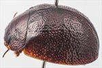
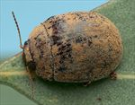
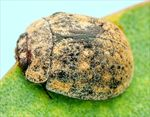
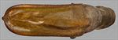
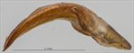
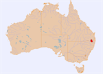

Click on images to enlarge
![Male, Amiens, SE Queensland [2020-298]](assets/image/Ta218/Ta218_A20-298_(2).jpg){kind=link}

Male, Amiens, SE Queensland [2020-298]


Male, Amiens, SE Queensland


Male, Pikedale, SE Queensland


Aedeagus, dorsal view (Nundubbermere, SE Queensland)


Aedeagus, lateral view (Nundubbermere, SE Queensland)


Distribution
Name
Trachymela sp. Ta218
Reference specimen
2020-298, Amiens, SE Queensland.
Adult Description
Length: ♂ 6.1–7.1 mm (n=12), ♀ 6.1–7.2 mm (n=12).
Colouration:
- Head: Mid-brown to dark-brown or reddish-brown, often uniformly so, sometimes with small fuscous, rarely black, area at lateral extremes of clypeal suture or adjacent to eyes; mandibles with dark-brown to black tips; labrum concolorous with head or slightly paler; antennomeres 1–4 uniformly straw-brown, 5–11 concolorous with preceding or fractionally darker, sometimes with distal edges slightly darker.
- Pronotum: Almost uniformly brown, concolorous with head, extreme lateral margins dark brown.
- Scutellum: Brown, concolorous with pronotum, usually with broad, darker brown border.
- Elytra: Brown, concolorous with pronotum, suture often bordered in black from scutellum to summit with border usually broadest at summit; small, approximately round, slightly raised black or dark-brown (often only slightly darker than surrounding surface) tubercles scattered unevenly over much of surface of disc, often noticeably more concentrated just posterior to antero-median depression; punctures concolorous with interstices; humeral callus concolorous with or darker than surrounds.
- Venter & Legs: Meso- and metathoracic ventrites and legs dark-brown, elsewhere sternites and head slightly or considerably lighter brown; inner surface of elytral epipleura usually completely brown, less often with thin black streak in posterior third.
- Cuticular Wax: Somewhat unevenly distributed, moderately thick layer of uniform, slightly paler brown shade than surface of insect, usually with sparser coating in scutellar area to around summit; dark verrucae visible above cuticular wax layer.
Morphology:
- Shape: Body rounded, greatest height viewed laterally clearly in front of middle of elytral margin.
- Head: Punctures moderately sized (pd ≈ 2–2.5 × ef), evenly and densely distributed. Antennae very short (AL: ♂ 36–41% BL, ♀ 32–33% BL), filiform, outer segments noticeably flattened.
- Pronotum: Almost evenly curved transversely with lateral margins very slightly explanate; foveal depression shallow, usually with clearly defined and almost round elevated area near middle; puncturation clearly impressed and similar in size to those on head in anterior half of disc, often slightly smaller and less well-defined in posterior half, rather evenly distributed with much finer and inconspicuous punctures scattered among them, becoming much coarser from foveal depression to lateral margins; interstices slightly rough in discal area, never so rough as to obscure punctures. Thickened front margins smoothly join thinner lateral margins in a smoothly rounded right-angle, with lateral margin almost straight or barely curving for 25–50% of length towards rear margin, then curving more strongly towards posterio-lateral angle.
- Scutellum: Smooth or slightly rough surface, sparsely punctured with punctures similar to or smaller than on adjacent pronotal surface, rarely unpunctured.
- Elytra: Surface evenly curved transversely over discal region, sometimes slightly explanate at margins, lightly curved longitudinally in anterior half, then slightly more strongly curved; barely discernible, very shallow depression extends across surface just in front of middle; punctures large and distinct and relatively evenly distributed between verrucae and set deeply among network of slightly raised interstices; a few smaller punctures scattered sparsely among them; a few small round verrucae, sometimes with small puncture in centre, scattered unevenly over much of elytral disc, with slight reduction in density over antero-median depression and in posterior third; these rarely aligned in longitudinal rows and sometimes barely elevated and so quite inconspicuous; VR3 anterior to antero-median depression rarely present as continuous ridge; suture not or only slightly carinate in posterior third; lateral margin straight, sometimes slightly oblique anteriorly, surface continuous under humeral callus. Vertical extension of epipleura considerable (HCE/PW = 0.33–0.37).
- Venter: Prosternal process parallel-sided over most of its length, rarely narrower anteriorly, open anteriorly; short setae very sparsely distributed over prosternal process and mesoventrite; single seta on anterior and median trochanter; front edge of metaventrite beveled, truncate.
Male Genitalia (Aedeagus):
- Dimensions: Moderately long (LPE = 26–30% BL).
- Dorsal view: Sides of shaft very slightly concave between basal sulcus and middle of ostium, then converging gradually initially and then more sharply towards apex; dorsal surface smoothly curved with faint dorso-median channel usually present for most of length; tip very slightly protruding; ostium quite large, with dorsal ostial processes protruding far forwards.
- Lateral view: Shaft almost evenly and moderately curved throughout its length, thinning very slightly towards apex before ostium, tip slightly deflexed.
Immature Stages
Unknown.
Similar species
- Ta32: Very similar to Ta218, with the aedeagus of the two species essentially identical in shape and size, though tending to be slightly broader in specimens of Ta218. Most prominently, it differs from Ta218 by its verrucae in the main being in the form of evenly spaced small tubercles that are much darker than the surrounding surface. The cuticular wax tends to be more evenly distributed than in Ta218.
- Ta29: Quite similar to Ta218 in size and also in the form of verrucae, and the two species are sometimes found together. It differs in the inner surface of the elytral epipleura being almost invariably completely black instead of largely brown as in Ta218, and in the different form of the aedeagus.
Notes
- Taxonomy: Very closely related to Ta32, sharing the same form of antenna and aedeagus.
- Distribution & Abundance: Collected from just a few locations near Stanthorpe in far southern Queensland.
- Host Associations: Found on the red-gum species Eucalyptus dealbata, and less often on section Adnataria species, including E. melliodora and E. moluccana.
Copyright © 2026. All rights reserved.